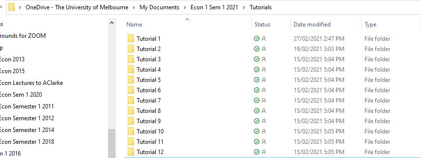
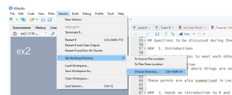
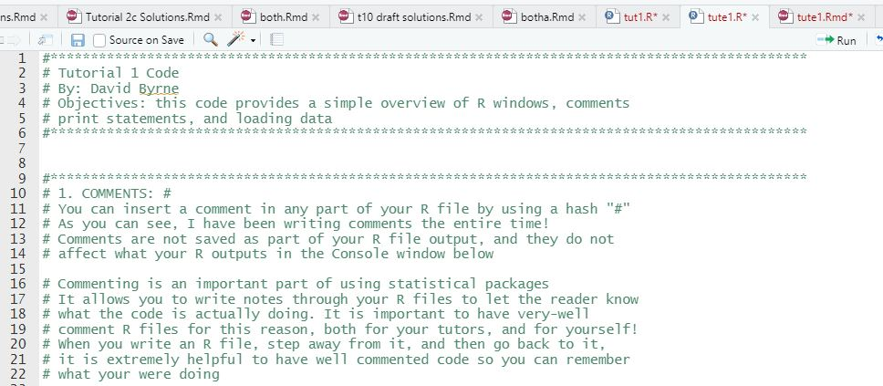
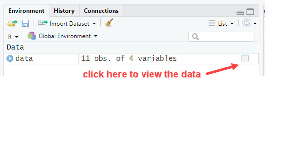
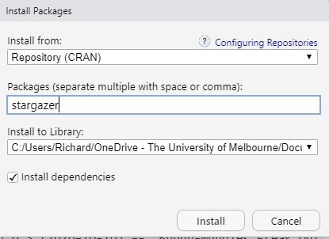

Code
setwd("/Users/byrned/Dropbox/Teaching/20001/Tutorials/Tutorial1")Welcome to ECOM20001 Econometrics 1.
Hopefully, you were able to meet a few of your classmates in your first tutorial. You don’t have to form groups within the same tutorial for assignments but if you are after an assignment group partner(s) your tutorial could be a good place to start.

Please familiarise yourself with the course syllabus (Subject Guide) here.
Tutorial participation counts 5% towards your final mark - please ensure that you attend the tutorial that you are officially enrolled in.
You should also run the R code provided before each class and come armed with any questions you may have about the code or content of that tutorial.
There are three assignments to be completed this semester. Submissions can be individual or groups of up to 3 students. If you form a group you will have to register your group for each assignment on the Subject Home Page in Canvas.
R is an open-source and free statistical program for doing econometrics. R-Studio is a companion program that makes working with R user friendly.
Throughout ECOM20001, we will undertake tutorials and assignments in R Studio.
R is a free software environment for statistical computing and graphics.
Tutorial 1 contains information on how to install R and R Studio.
If you have any problems doing this, please ask your tutor in class.
The R program files and CSV data files are stored under
\[\text{Modules} \rightarrow \text{Tutorials}\] on the Subject Home Page.
It is recommended that you set up the following directory structure on your PC or laptop.

this ensures that all the output generated using R during the tutorial will reside in the sub-folder for that tutorial.
Next, download the data files (.csv) and R script file (.r) to the relevant subdirectory (e.g. Tutorial 1 for this tutorial).
Now that we have R and R Studio installed and the files for Tutorial 1, tute1_tutors.csv and tute1.R in the Tutorial 1 sub-folder we can start exploring how to use R.
You will notice this line in the R code provided:
setwd("/Users/byrned/Dropbox/Teaching/20001/Tutorials/Tutorial1")I’d suggest that you comment this line out (each week); you can do this by placing a hash (#) at the start of the line e.g.
# setwd("/Users/byrned/Dropbox/Teaching/20001/Tutorials/Tutorial1") notice how the text is now italicised indicating that this line will not be run by R.
comments are not only useful for you, but also for others reading your code. You should always use comments in the R scripts that are required for assignments.
In general, including comments in R scripts is considered “best practice”.
Then go to the top Menu bar and select \[\text{Session} \rightarrow \text{Set Working Directory} \rightarrow \text{Choose Directory}\]

In the Console window in RStudio (bottom left pane) type in
getwd()[1] "/Users/quekc/Documents/ecom1/ecom1/T1"to make sure you are pointing to the correct directory
In the Environment pane (on the right in RStudio) under Files (in the menu bar) click on tute1.r . You should now see the R code in a new Scripting window (on the left in RStudio)

the next thing we want to do is import the CSV data file into a R ‘dataframe’. To do this, run the following line in the R script provided:
data=read.csv(file="tute1_tutors.csv")you should see the following in the Environment window:

to view the data click on the “spreadsheet” button shown above or use this command in the Script window
print(data) instructor nationality fav_icrecream fav_number
1 David B. Canada Strawberry 2904
2 David M. England Vanilla 7
3 Jia Sheen Malaysia Vanilla 3
4 Kael Australia Chocolate 7
5 Abby Vietnam Vanilla 8
6 Richard Australia Vanilla 5
7 Roy China Vanilla 6
8 Sahiba India Chocolate 5
9 Thai Australia Chocolate 7
10 Simon Korea Vanilla 109
11 Paul Australia Chocolate 3.14555323 (pi)while this is OK for small datasets such as this, we will be using data sets with over 15,000 observations in the coming weeks.
Another way to check whether all the data has been created in the data frame correctly is to look at the first few rows of data and the last few rows.
This can be done by running
head(data,4) instructor nationality fav_icrecream fav_number
1 David B. Canada Strawberry 2904
2 David M. England Vanilla 7
3 Jia Sheen Malaysia Vanilla 3
4 Kael Australia Chocolate 7tail(data,3) instructor nationality fav_icrecream fav_number
9 Thai Australia Chocolate 7
10 Simon Korea Vanilla 109
11 Paul Australia Chocolate 3.14555323 (pi)If you would like to see, for example, records for observations 4-6, you could use
data[c(4:6),] instructor nationality fav_icrecream fav_number
4 Kael Australia Chocolate 7
5 Abby Vietnam Vanilla 8
6 Richard Australia Vanilla 5The idea behind providing the R script file along with the tutorial questions is to give you a chance to see what various R commands output before the tutorial. You should read through the comments provided in the R script file and then run the code “chink” to see what is output e.g.
# Print Hello World
print("Hello World")[1] "Hello World"# Print your second R output!
print("R says: Hello! How are you?")[1] "R says: Hello! How are you?"# Print can also print numbers without quotes
print(20001)[1] 20001This way you get to know how the commands work - remember you will have to write your own code to complete assignments.
Everything in R is an object.
R has 6 basic data types. (In addition to the five listed below, there is also raw which we will not worry about.)
Elements of these data types may be combined to form data structures, such as atomic vectors. When we call a vector atomic, we mean that the vector only holds data of a single data type.
To get a list of variables names in our data frame use:
names(data)[1] "instructor" "nationality" "fav_icrecream" "fav_number" To reference a variable you need to include the data frame name then $ and the the variable name; e.g. to print out the tutors nationalities use
print(data$nationality) [1] "Canada" "England" "Malaysia" "Australia" "Vietnam" "Australia"
[7] "China" "India" "Australia" "Korea" "Australia"to find out what types of variables are in the data frame use
sapply(data,class) instructor nationality fav_icrecream fav_number
"character" "character" "character" "character" The next example shows how to change an observation and variable type. You should not have to do this as the data files provided should have the correct data structure; however as an example of one way to change an observation and variable type let’s look at the variable fav_number
The variable fav_number should be numeric; because the last entry has characters
(e.g. pi) R is treating the whole vector as character. To change this:
the dimensions of the data frame are given by
dim(data)[1] 11 4so our data frame has 11 rows and 4 columns.
The value we want to change (pi) is in the last row (11th) of the last column (4th) so we can use this code
# change this observation from pi to 3.145553
data[11,4]=3.145553Check out that the observation has been changed; another good way to do this (without using additional packages) is to find the string 3.145553 in the variable vector fav_number
grep("3.14",data$fav_number)[1] 11so the observation has been changed correctly. However, if you run
sapply(data,class)again the variable fav_number is still showing as a character variable rather than numeric! The next thing to do then is to change this vector to numeric using
# coerce the variable to numeric
data$fav_number <- as.numeric(data$fav_number)
# check that fav_number is now a numeric vector
sapply(data,class) instructor nationality fav_icrecream fav_number
"character" "character" "character" "numeric" now the variable fav_number is numeric with the correct observation for Paul’s favourite number (pi).
tail(data,1) instructor nationality fav_icrecream fav_number
11 Paul Australia Chocolate 3.145553Currently, the CRAN package repository features 21953 available packages.
Anyone can write an R package; and they add and delete packages almost everyday!
We will try to keep the use of packages to a minimum however you do need to know how to install and call up packages required to run the R script files.
Say, for example, we need to install the stargazer package
There are two ways to do this.
Using R Studio: go to the Files Window (bottom right) and click on Packages then enter the package names e.g. stargazer in the Packages dialog box and then hit Install

The second way is to install the packages directly using R code. In the script window enter and run
install.packages("stargazer")I’d suggest using the first method.
After this tutorial you should be comfortable with
creating a directory structure for Econ 1 on your laptop/PC
downloading files to the correct directory for each week’s tutorial
installing R and R Studio on you laptop/PC
using R Studio to create a R data frame
using the R script file provided each week
entering some basic R commands
As noted in the Administration section (above) you should download the tute2.R and tute2_crime.csv to your tutorial 2 sub-folder; then follow the instructions we went through today to create a data frame.
Next open tute2.pdf and have a look at the questions; if you are able to match the relevant R code contained in the tute2.R file to the questions before the tutorial that would be great.
Look forward to meeting you all again next week 👍